4. Le modèle d'une action
Revenons à l'architecture d'une application ASP.NET MVC :
 |
Dans le chapitre précédent, nous avons regardé le processus qui amène la requête [1] au contrôleur et à l'action [2a] qui vont la traiter, un mécanisme qu'on appelle le routage. Nous avons présenté par ailleurs les différentes réponses que peut faire une action au navigateur. Nous avons pour l'instant présenté des actions qui n'exploitaient pas la requête qui leur était présentée. Une requête [1] transporte avec elle diverses informations que ASP.NET MVC présente [2a] à l'action sous forme d'un modèle. On ne confondra pas ce terme avec le modèle M d'une vue V [2c] qui est produit par l'action :
 |
- la requête HTTP du client arrive en [1] ;
- en [2], les informations contenues dans la requête vont être transformées en modèle d'action [3], une classe souvent mais pas forcément, qui servira d'entrée à l'action [4] ;
- en [4], l'action, à partir de ce modèle, va générer une réponse. Celle-ci aura deux composantes : une vue V [6] et le modèle M de cette vue [5] ;
- la vue V [6] va utiliser son modèle M [5] pour générer la réponse HTTP destinée au client.
Dans le modèle MVC, l'action [4] fait partie du C (contrôleur), le modèle de la vue [5] est le M et la vue [6] est le V.
Ce chapitre étudie les mécanismes de liaison entre les informations transportées par la requête, qui sont par nature des chaînes de caractères et le modèle de l'action qui peut être une classe avec des propriétés de divers types.
4.1. Initialisation des paramètres de l'action
Nous ajoutons [1] à la solution existante un nouveau projet ASP.NET MVC de base :
 |
 |
- en [2], le nom du nouveau projet ;
- en [3, 4], nous choisissons un projet ASP.NET MVC de base ;
- en [5], le nouveau projet.
On fera du nouveau projet, le projet de démarrage de la solution.
Comme il a été fait au paragraphe 3.1, nous créons un contrôleur nommé [First] [1] :
 |
Dans ce contrôleur, nous créons l'action [Action01] suivante :
using System.Web.Mvc;
namespace Exemple_02.Controllers
{
public class FirstController : Controller
{
// Action01
public ContentResult Action01(string nom)
{
return Content(string.Format("Contrôleur=First, Action=Action01, nom={0}", nom));
}
}
}
La nouveauté réside à la ligne 8 : la méthode [Action01] a un paramètre. On s'intéresse dans ce chapitre aux différentes façons d'initialiser les paramètres d'une action. Le paramètre [nom] ci-dessus est initialisé dans l'ordre avec les valeurs suivantes :
Request.Form["nom"] | un paramètre nommé [nom] envoyé par une commande POST |
RouteData.Values["nom"] | un élément d'URL nommé [nom] |
Request.QueryString["nom"] | un paramètre nommé [nom] envoyé par une commande GET |
Request.Files["nom"] | un fichier uploadé nommé [nom] |
Examinons ces différents cas. Demandons directement dans le navigateur l'URL [/First/Action01?nom=someone]. On obtient la réponse suivante :
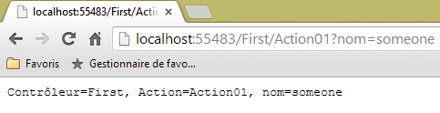 |
La requête HTTP du navigateur a été la suivante :
- ligne 1 : la requête est un GET. L'URL demandée embarque le paramètre [nom]. Côté serveur, la requête arrive à l'action [Action01] qui a la signature suivante :
public ContentResult Action01(string nom)
Pour donner une valeur au paramètre nom, ASP.NET MVC essaie successivement et dans l'ordre les valeurs Request.Form["nom"], RouteData.Values["nom"], Request.QueryString["nom"], Request.Files["nom"]. Il s'arrête dès qu'il a trouvé une valeur. Le paramètre [nom] embarqué dans l'URL du GET a été placé par le framework dans Request.QueryString["nom"]. C'est avec cette valeur [someone] que va être initialisé le paramètre [nom] de [Action01]. Ensuite le code de [Action01] s'exécute :
return Content(string.Format("Contrôleur=First, Action=Action01, nom={0}", nom), "text/plain", Encoding.UTF8);
Ce code fournit la réponse envoyée au client :
 |
Note : le mécanisme de liaison des paramètres est insensible à la casse. Ainsi si notre action est définie comme :
public ContentResult Action01(string NOM)
et que le paramètre passé est [?NoM=zébulon], la liaison aura bien lieu. Le paramètre [NOM] de [Action01] recevra la valeur [zébulon].
Maintenant, demandons la même URL avec un POST. Pour cela, nous utilisons l'application [Advanced Rest Client] :
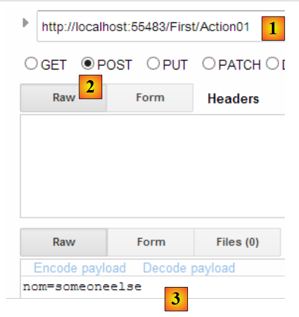 |
- en [1], l'URL demandée ;
- en [2], la commande POST sera utilisée ;
- en [3], les paramètres du POST.
Envoyons cette requête et regardons les logs HTTP. La requête HTTP est la suivante :
 |
- en [1], le POST ;
- en [2], les paramètres du POST. Techniquement, ils ont été envoyés derrière les entêtes HTTP après la ligne vide signalant la fin de ces entêtes ;
- en [3], la réponse obtenue. On récupère bien le paramètre [nom] du POST. Dans les valeurs essayées pour le paramètre nom Request.Form["nom"], RouteData.Values["nom"], Request.QueryString["nom"], Request.Files["nom"], c'est la première qui a marché.
Maintenant, modifions la route par défaut dans [App_Start/RouteConfig]. Actuellement, cette route est la suivante :
routes.MapRoute(
name: "Default",
url: "{controller}/{action}/{id}",
defaults: new { controller = "Home", action = "Index", id = UrlParameter.Optional }
);
Changeons-la en :
routes.MapRoute(
name: "Default",
url: "{controller}/{action}/{nom}",
defaults: new { controller = "Home", action = "Index", nom = UrlParameter.Optional }
);
- ligne 3, nous avons nommé [nom] le troisième élément d'une route ;
- ligne 4, cet élément est déclaré optionnel.
Maintenant, recompilons l'application et demandons l'URL [/First/Action01/zébulon] directement dans le navigateur. Nous obtenons, la réponse suivante :
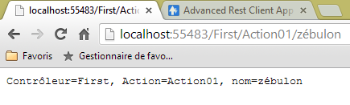 |
Dans les valeurs essayées pour le paramètre nom Request.Form["nom"], RouteData.Values["nom"], Request.QueryString["nom"], Request.Files["nom"], c'est la deuxième qui a marché.
Faisons la même requête avec un POST et [Advanced Rest Client] :
 |
- en [1], nous avons donné une valeur à l'élément {nom} de la route ;
- en [2], on ajoute un paramètre [nom] à la requête postée ;
- la réponse obtenue est en [3].
Dans les valeurs essayées pour le paramètre [nom] Request.Form["nom"], RouteData.Values["nom"], Request.QueryString["nom"], Request.Files["nom"], deux convenaient, les deux premières. C'est la première qui a été utilisée.
4.2. Vérifier la validité des paramètres de l'action
Si une action a un paramètre nommé [p], ASP.NET MVC va essayer de lui affecter l'une des valeurs Request.Form["p"], RouteData.Values["p"], Request.QueryString["p"], Request.Files["p"]. Les trois premières valeurs sont des chaînes de caractères. Si le paramètre [p] n'est pas de type [string], des problèmes peuvent survenir.
Créons la nouvelle action suivante :
// Action02
public ContentResult Action02(int age)
{
string texte = string.Format("Contrôleur={0}, Action={1}, âge={2}", RouteData.Values["controller"], RouteData.Values["action"],age);
return Content(texte, "text/plain", Encoding.UTF8);
}
- ligne 2, l'action [Action02] admet un paramètre nommé [age] de type int. Il faudra que la chaîne de caractères récupérée soit convertible en int.
Demandons l'URL [http://localhost:55483/First/Action02?age=21]. On obtient la page suivante :
 |
Demandons l'URL [http://localhost:55483/First/Action02?age=21x]. On obtient la page suivante :
 |
Cette fois-ci, on a récupéré une page d'erreur. Il est intéressant de regarder les entêtes HTTP envoyés par le serveur dans ce cas :
- ligne 1 : le serveur a répondu avec un code [500 Internal Server Error] et a envoyé une page HTML (ligne 3) de 12438 octets (ligne 5) pour expliquer les raisons possibles de cette erreur.
Créons maintenant l'action [Action03] suivante :
// Action03
public ContentResult Action03(int? age)
{
...
}
[Action03] est identique à [Action02] si ce n'est qu'on a changé le type du paramètre [age] en int?, ce qui signifie entier ou null.
Demandons l'URL [http://localhost:55483/First/Action03?age=21x]. On obtient la page suivante :
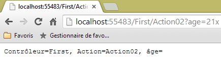 |
ASP.NET MVC n'a pas réussi à convertir [21x] en type int. Il a alors affecté la valeur null au paramètre [age] comme l'autorise son type int?. Il est cependant possible de savoir si le paramètre a pu recevoir une valeur de la requête ou non.
Nous construisons la nouvelle action [Action04] suivante :
// Action04
public ContentResult Action04(int? age)
{
bool valide = ModelState.IsValid;
string texte = string.Format("Contrôleur={0}, Action={1}, âge={2}, valide={3}", RouteData.Values["controller"], RouteData.Values["action"], age, valide);
return Content(texte, "text/plain", Encoding.UTF8);
}
- ligne 2 : on a gardé le type [int?]. Cela permet en particulier à la requête de ne pas fournir le paramètre [age] qui reçoit alors la valeur null ;
- ligne 4 : on teste si le modèle de l'action est valide. Le modèle de l'action est formé de l'ensemble de ses paramètres, ici [age]. Le modèle est valide si tous les paramètres ont pu obtenir une valeur de la requête ou bien la valeur null si le type du paramètre le permet ;
- ligne 5 : on ajoute la valeur de la variable [valide] dans le text envoyé au client.
Demandons l'URL [http://localhost:55483/First/Action04?age=21x]. On obtient la page suivante :
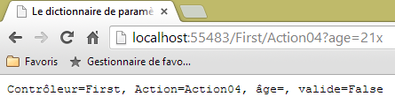 |
ASP.NET MVC n'a pas réussi à convertir [21x] en type int. Il a alors affecté la valeur null au paramètre [age] comme l'autorise son type int?. Mais il y a eu des erreurs de conversion comme le montre la valeur de [valide].
Il est possible d'avoir le message d'erreur associé à une conversion ratée. Examinons la nouvelle action suivante :
// Action05
public ContentResult Action05(int? age)
{
string erreurs = getErrorMessagesFor(ModelState);
string texte = string.Format("Contrôleur={0}, Action={1}, âge={2}, valide={3}, erreurs={4}", RouteData.Values["controller"], RouteData.Values["action"], age, ModelState.IsValid, erreurs);
return Content(texte, "text/plain", Encoding.UTF8);
}
La nouveauté est ligne 4. On y appelle une méthode privée [getErrorMessagesFor] à laquelle on passe l'état du modèle de l'action. Elle rend une chaîne de caractères rassemblant les messages de toutes les erreurs qui se sont produites. Cette méthode est la suivante :
private string getErrorMessagesFor(ModelStateDictionary état)
{
List<String> erreurs = new List<String>();
string messages = string.Empty;
if (!état.IsValid)
{
foreach (ModelState modelState in état.Values)
{
foreach (ModelError error in modelState.Errors)
{
erreurs.Add(getErrorMessageFor(error));
}
}
foreach (string message in erreurs)
{
messages += string.Format("[{0}]", message);
}
}
return messages;
}
- ligne 1 : le paramètre effectif [ModelState] passé à la méthode est de type [ModelStateDictionary] ;
- ligne 3 : une liste de messages d'erreurs, vide au départ ;
- ligne 5 : on teste si l'état passé en paramètre est valide ou non. Si non, alors on va agréger tous les messages d'erreur en une unique chaîne de caractères ;
- ligne 7 : le type [ModelStateDictionary] a une propriété [Values] qui est une collection de types [ModelState]. Il y a un [ModelState] par élément du modèle. Par exemple :
- ModelState["age"] : l'état du modèle de l'action pour le paramètre [age],
- ModelState["age"].Errors : la collection d'erreurs pour ce paramètre. Les erreurs sont de type [ModelError],
- ModelState["age"].Errors[i].ErrorMessage : l'éventuel message d'erreur n° i pour le paramètre [age] du modèle
- ModelState["age"].Errors[i].Exception : l'exception de l'erreur n° i de la collection des erreurs sur le paramètre [age],
- ModelState["age"].Errors[i].Exception.InnerException : la cause de cette exception,
- ModelState["age"].Errors[i].Exception.InnerException.Message : le message de la cause de l'exception ;
- ligne 9 : on parcourt la collection [Errors] d'un [ModelState] particulier ;
- ligne 11 : on récupère le message d'erreur d'un [ModelError] particulier et on l'ajoute à la liste des messages d'erreurs de la ligne 3 ;
- lignes 14-17 : on agrège les éléments de la liste des messages d'erreurs en une unique chaîne de caractères.
La méthode [getErrorMessageFor] de la ligne 11 est la suivante :
private string getErrorMessageFor(ModelError error)
{
if (error.ErrorMessage != null && error.ErrorMessage.Trim() != string.Empty)
{
return error.ErrorMessage;
}
if (error.Exception != null && error.Exception.InnerException == null && error.Exception.Message != string.Empty)
{
return error.Exception.Message;
}
if (error.Exception != null && error.Exception.InnerException != null && error.Exception.InnerException.Message != string.Empty)
{
return error.Exception.InnerException.Message;
}
return string.Empty;
}
- ligne 1 : on reçoit un type [ModelError] qui encapsule une erreur sur l'un des éléments du modèle de l'action. On va chercher le message d'erreur dans trois endroits différents :
- dans [ModelError].ErrorMessage, lignes 3-6 ;
- dans [ModelError].Exception.Message, lignes 7-10 ;
- dans [ModelError].Exception.InnerException.Message, lignes 11-14 ;
Durant les tests, on remarque que le message d'erreur est trouvé dans ces trois endroits selon la nature de l'élément du modèle. Il doit y avoir une règle qui permette d'obtenir à coup sûr le message d'erreur associé à un élément du modèle, mais je ne la connais pas. Je le cherche donc aux différents endroits où je peux le trouver et ce dans un certain ordre. Dès qu'un message non vide a été trouvé, il est retourné.
Demandons l'URL [http://localhost:55483/First/Action05?age=21x]. On obtient la page suivante :
 |
4.3. Une action à plusieurs paramètres
Considérons la nouvelle action suivante :
// Action06
public ContentResult Action06(double? poids, int? age)
{
string erreurs = getErrorMessagesFor(ModelState);
string texte = string.Format("Contrôleur={0}, Action={1}, poids={2}, âge={3}, valide={4}, erreurs={5}", RouteData.Values["controller"], RouteData.Values["action"], poids, age, ModelState.IsValid, erreurs);
return Content(texte, "text/plain", Encoding.UTF8);
}
- ligne 2 : nous avons deux paramètres [poids] et [age].
Les règles décrites précédemment s'appliquent maintenant aux deux paramètres. Voici quelques exemples d'exécution :
 |
 |
4.4. Utiliser une classe comme modèle d'une action
Définissons une classe qui sera le modèle d'une action. Nous la mettons dans le dossier [Models] [1].
 |
Son code sera le suivant :
namespace Exemple_02.Models
{
public class ActionModel01
{
public double? Poids { get; set; }
public int? Age { get; set; }
}
}
Notre classe a comme propriétés automatiques, les deux paramètres [Poids] et [Age] étudiés précédemment. Cette classe sera le paramètre d'entrée de l'action [Action07] :
// Action07
public ContentResult Action07(ActionModel01 modèle)
{
string erreurs = getErrorMessagesFor(ModelState);
string texte = string.Format("Contrôleur={0}, Action={1}, poids={2}, âge={3}, valide={4}, erreurs={5}", RouteData.Values["controller"], RouteData.Values["action"], modèle.Poids, modèle.Age, ModelState.IsValid, erreurs);
return Content(texte, "text/plain", Encoding.UTF8);
}
- ligne 2 : le modèle de l'action est une instance de type [ActionModel01].
Reprenons les mêmes deux exemples que précédemment :
 |
 |
On remarquera que la liaison des paramètres n'est pas sensible à la casse. Les paramètres de la requête étaient [age] et [poids]. Ils ont alimenté les propriétés [Age] et [Poids] de la classe [ModelAction01].
Par ailleurs, nous avons jusqu'à maintenant utilisé des requêtes HTTP [GET]. Montrons que les requêtes [POST] ont le même comportement. Pour cela utilisons de nouveau l'application [Advanced Rest Client] :
 |
- en [1], l'URL demandée ;
- en [2], elle le sera par une commande POST ;
- en [3], les paramètres du POST.
On obtient la même réponse qu'avec le GET :

4.5. Modèle de l'action avec contraintes de validité - 1
Avec le modèle précédent :
namespace Exemple_02.Models
{
public class ActionModel01
{
public double? Poids { get; set; }
public int? Age { get; set; }
}
}
les paramètres [poids] et [age] peuvent être absents de la requête. Dans ce cas, les propriétés [Poids] et [Age] reçoivent la valeur [null] et aucune erreur n'est signalée. On pourrait vouloir transformer le modèle comme suit :
namespace Exemple_02.Models
{
public class ActionModel01
{
public double Poids { get; set; }
public int Age { get; set; }
}
}
Lignes 5 et 6, les propriétés [Poids] et [Age] ne peuvent plus avoir la valeur [null]. Voyons ce qui se passe avec ce nouveau modèle lorsque les paramètres [poids] et [age] sont absents de la requête.
 |
Il n'y a pas eu d'erreurs et les propriétés [Poids] et [Age] ont gardé leur valeur d'initialisation : 0. ASP.NET MVC :
- a créé une instance du modèle par un new ActionModel01. C'est là que les propriétés [Poids] et [Age] ont reçu leur valeur 0 ;
- n'a affecté aucune valeur à ces deux propriétés car il n'y avait aucun paramètre portant leur nom.
Le premier modèle nous permet de vérifier l'absence d'un paramètre : la propriété correspondante a alors la valeur [null]. Le second ne nous le permet pas. Il est possible d'ajouter d'autres contraintes de validation que le simple type des paramètres. Nous allons maintenant les présenter.
Considérons le nouveau modèle d'action suivant :
 |
using System.ComponentModel.DataAnnotations;
namespace Exemple_02.Models
{
public class ActionModel02
{
[Required]
[Range(1, 200)]
public double? Poids { get; set; }
[Required]
[Range(1, 150)]
public int? Age { get; set; }
}
}
- ligne 6 : indique que le champ [Poids] est requis ;
- ligne 7 : indique que le champ [Poids] doit être dans l'intervalle [1,200] ;
- ligne 9 : indique que le champ [Age] est requis ;
- ligne 7 : indique que le champ [Age] doit être dans l'intervalle [1,150] ;
L'action utilisant ce modèle sera l'action [Action08] suivante :
// Action08
public ContentResult Action08(ActionModel02 modèle)
{
string erreurs = getErrorMessagesFor(ModelState);
string texte = string.Format("Contrôleur={0}, Action={1}, poids={2}, âge={3}, valide={4}, erreurs={5}", RouteData.Values["controller"], RouteData.Values["action"], modèle.Poids, modèle.Age, ModelState.IsValid, erreurs);
return Content(texte, "text/plain", Encoding.UTF8);
}
- ligne 2 : l'action reçoit une instance du modèle [ActionModel02] ;
Faisons quelques tests :
 |
 |
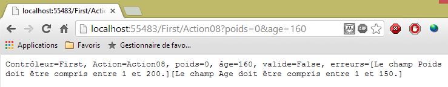 |
 |
Les erreurs sont bien détectées. Maintenant, faisons évoluer le modèle comme suit :
using System.ComponentModel.DataAnnotations;
namespace Exemple_02.Models
{
public class ActionModel02
{
[Required]
[Range(1, 200)]
public double Poids { get; set; }
[Required]
[Range(1, 150)]
public int Age { get; set; }
}
}
Lignes 8 et 11, les propriétés ne peuvent plus avoir la valeur [null]. Compilons et refaisons le test sans paramètres :
 |
L'absence de paramètres a fait que les propriétés [Poids] et [Age] ont gardé leur valeur acquise lors de l'instanciation du modèle : 0. La validation intervient ensuite. L'attribut [Required] est alors satisfait. On voit que le message d'erreur ci-dessus est celui de l'attribut [Range]. Donc pour vérifier la présence d'un paramètre, il faut que la propriété associée soit nullable, ç-à-d puisse recevoir la valeur null.
Revenons au modèle [ActionModel02] initial et considérons une action dont le modèle est constitué d'une instance [ActionModel02] et d'un type [DateTime] nullable :
// Action09
public ContentResult Action09(ActionModel02 modèle, DateTime? date)
{
string erreurs = getErrorMessagesFor(ModelState);
string texte = string.Format("Contrôleur={0}, Action={1}, poids={2}, âge={3}, date={4}, valide={5}, erreurs={6}", RouteData.Values["controller"], RouteData.Values["action"], modèle.Poids, modèle.Age, date, ModelState.IsValid, erreurs);
return Content(texte, "text/plain", Encoding.UTF8);
}
Faisons quelques tests :
 |
On n'a pas passé de paramètres à l'action. Les attributs [Required] des propriétés [Poids] et [Age] ont joué leur rôle. La date elle, a reçu la valeur null et aucune erreur n'a été signalée.
On passe maintenant des paramètres invalides :
 |
On passe maintenant des valeurs valides :
 |
Examinons d'autres contraintes de validité. Le nouveau modèle d'action est le suivant :
 |
using System.ComponentModel.DataAnnotations;
namespace Exemple_02.Models
{
public class ActionModel03
{
[Required(ErrorMessage = "Le paramètre email est requis")]
[EmailAddress(ErrorMessage = "Le paramètre email n'a pas un format valide")]
public string Email { get; set; }
[Required(ErrorMessage = "Le paramètre jour est requis")]
[RegularExpression(@"^\d{1,2}$", ErrorMessage = "Le paramètre jour doit avoir 1 ou 2 chiffres")]
public string Jour { get; set; }
[Required(ErrorMessage = "Le paramètre info1 est requis")]
[MaxLength(4, ErrorMessage = "Le paramètre info1 ne peut avoir plus de 4 caractères")]
public string Info1 { get; set; }
[Required(ErrorMessage = "Le paramètre info2 est requis")]
[MinLength(2, ErrorMessage = "Le paramètre info2 ne peut avoir moins de 2 caractères")]
public string Info2 { get; set; }
[Required(ErrorMessage = "Le paramètre info3 est requis")]
[MinLength(4, ErrorMessage = "Le paramètre info3 doit avoir 4 caractères exactement")]
[MaxLength(4, ErrorMessage = "Le paramètre info3 doit avoir 4 caractères exactement")]
public string Info3 { get; set; }
}
}
- ligne 6 : l'attribut [Required] avec cette fois, un message d'erreur que nous fixons nous mêmes ;
- ligne 7 : l'attribut [EMailAddress] demande à ce que le champ [Email] contienne une adresse électronique de format valide ;
- ligne 11 : l'attribut [RegularExpression] demande à ce que le champ [Jour] contienne une chaîne d'un ou deux chiffres. Le premier paramètre est l'expression régulière que doit vérifier le champ ;
- ligne 15 : l'attribut [MaxLength] demande à ce que le champ [Info1] ait au plus 4 caractères ;
- ligne 19 : l'attribut [MinLength] demande à ce que le champ [Info2] ait au moins 2 caractères ;
- lignes 23-24 : les attributs [MaxLength] et [MinLength] combinés demandent à ce que le champ [Info3] ait exactement 4 caractères ;
L'action [Action10] utilisera ce modèle :
// Action10
public ContentResult Action10(ActionModel03 modèle)
{
string erreurs = getErrorMessagesFor(ModelState);
string texte = string.Format("email={0}, jour={1}, info1={2}, info2={3}, info3={4}, erreurs={5}",
modèle.Email, modèle.Jour, modèle.Info1, modèle.Info2, modèle.Info3, erreurs);
return Content(texte, "text/plain", Encoding.UTF8);
}
Faisons quelques tests avec cette action.
Tout d'abord sans paramètres :
 |
Puis avec des paramètres invalides :
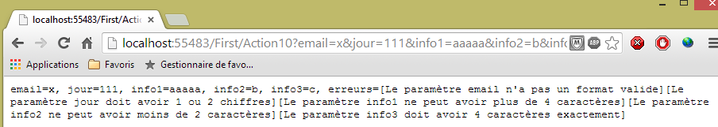 |
Puis avec des paramètres valides :
 |
4.6. Modèle de l'action avec contraintes de validité - 2
Nous présentons d'autres contraintes d'intégrité. Le nouveau modèle de l'action sera la classe [ActionModel04] suivante :
 |
using System.ComponentModel.DataAnnotations;
namespace Exemple_02.Models
{
public class ActionModel04
{
[Required(ErrorMessage="Le paramètre url est requis")]
[Url(ErrorMessage="URL invalide")]
public string Url { get; set; }
[Required(ErrorMessage = "Le paramètre info1 est requis")]
public string Info1 { get; set; }
[Required(ErrorMessage = "Le paramètre info2 est requis")]
[Compare("Info1",ErrorMessage="Les paramètres info1 et info2 doivent être identiques")]
public string Info2 { get; set; }
[Required(ErrorMessage = "Le paramètre cc est requis")]
[CreditCard(ErrorMessage = "Le paramètre cc n'est pas un n° de carte de crédit valide")]
public string Cc { get; set; }
}
}
- ligne 8 : demande à ce que le champ annoté soit une URL valide ;
- ligne 13 : demande à ce que les propriétés [Info1] et [Info2] aient la même valeur ;
- ligne 16 : demande à ce que le champ annoté soit un n° de carte de crédit valide.
L'action utilisant ce modèle sera la suivante :
// Action11
public ContentResult Action11(ActionModel04 modèle)
{
string erreurs = getErrorMessagesFor(ModelState);
string texte = string.Format("URL={0}, Info1={1}, Info2={2}, CC={3},erreurs={4}",
modèle.Url, modèle.Info1, modèle.Info2, modèle.Cc, erreurs);
return Content(texte, "text/plain", Encoding.UTF8);
}
Pour tester l'action [Action11], nous utilisons l'application [Advanced Rest Client] :
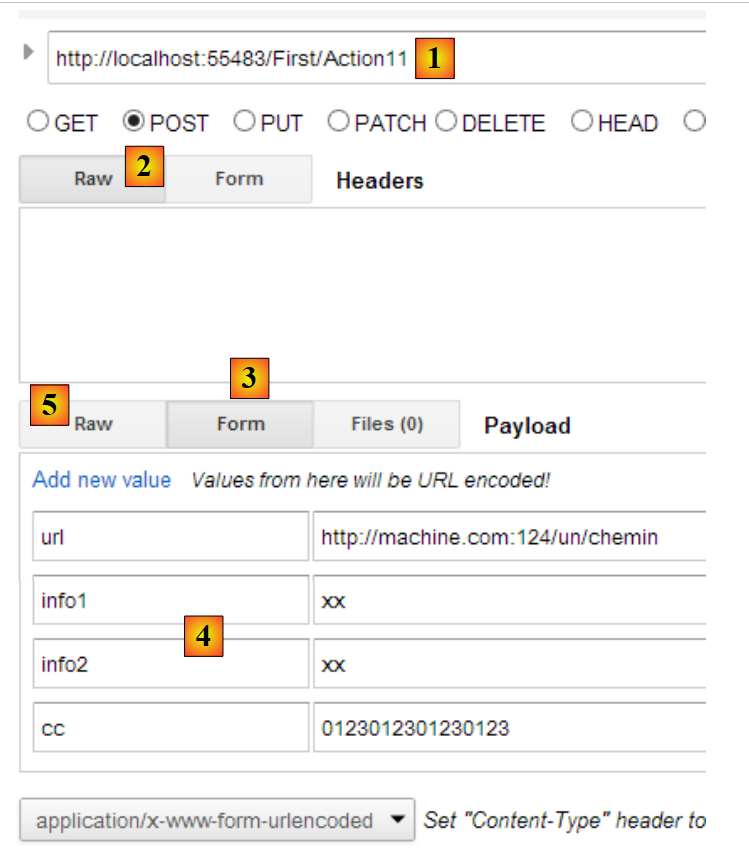 |
- en [1], l'URL de l'action [Action11] ;
- en [2], cette URL sera demandée avec un POST ;
- en [3], on sélectionne l'onglet [Form] ;
- en [4], les valeurs des quatre paramètres attendus. Cette initialisation est une facilité offerte par [ARC]. Les paramètres réellement envoyés peuvent être vus dans l'onglet [Raw] [5] ;
 |
- en [6], les paramètres du POST.
Pour cette requête, on reçoit la réponse suivante :
 |
Passons des paramètres invalides :
 |
Nous obtenons alors la réponse suivante :
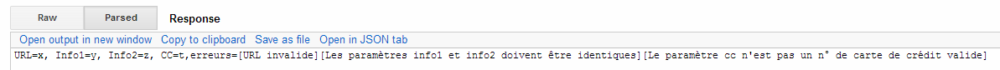 |
4.7. Modèle de l'action avec contraintes de validité - 3
Parfois les contraintes d'intégrité disponibles ne suffisent pas. On peut alors en créer soit même. On peut notamment utiliser un modèle implémentant l'interface [IValidatableObject]. Dans ce cas, on ajoute nos propres vérifications du modèle dans la méthode [Validate] de cette interface. Voyons un exemple. Le nouveau modèle de l'action sera la classe [ActionModel05] suivante :
 |
using System.Collections.Generic;
using System.ComponentModel.DataAnnotations;
namespace Exemple_02.Models
{
public class ActionModel05 : IValidatableObject
{
[Required(ErrorMessage = "Le paramètre taux est requis")]
public double? Taux { get; set; }
public IEnumerable<ValidationResult> Validate(ValidationContext validationContext)
{
List<ValidationResult> résultats = new List<ValidationResult>();
bool ok = Taux < 4.2 || Taux > 6.7;
if (!ok)
{
résultats.Add(new ValidationResult("Le paramètre taux doit être < 4.2 ou > 6.7", new string[] { "Taux" }));
}
return résultats;
}
}
}
- ligne 6 : le modèle implémente l'interface [IValidatableObject] ;
- ligne 10 : la méthode [Validate] de cette interface. Elle rend une collection d'éléments de type [ValidationResult]. Ce type encapsule les erreurs que l'on veut signaler ;
- ligne 9 : un taux valide est un taux <4.2 ou > 6.7 ;
- ligne 12 : on crée une liste vide d'éléments de type [ValidationResult] ;
- ligne 13 : on vérifie la validité de la propriété [Taux] ;
- lignes 14-17 : si la propriété [Taux] est invalide, alors on ajoute un élément de type [ValidationResult] dans la liste des résultats. Le premier paramètre est un message d'erreur. Le second paramètre, facultatif, est une collection des propriétés concernées par cette erreur.
L'action utilisant ce modèle sera la suivante :
// Action12
public ContentResult Action12(ActionModel05 modèle)
{
string erreurs = getErrorMessagesFor(ModelState);
string texte = string.Format("taux={0}, erreurs={1}", modèle.Taux, erreurs);
return Content(texte, "text/plain", Encoding.UTF8);
}
Voici un exemple d'exécution :
 |
4.8. Modèle d'action de type Tableau ou Liste
Considérons l'action [Action13] suivante :
// Action13
public ContentResult Action13(string[] data)
{
string strData = "";
if (data != null && data.Length != 0)
{
strData = string.Join(",", data);
}
string texte = string.Format("data=[{0}]", strData);
return Content(texte, "text/plain", Encoding.UTF8);
}
- ligne 2 : le modèle de l'action est constitué d'un tableau de [string]. Il nous permet de récupérer un paramètre nommé [data] qui peut être présent plusieurs fois dans les paramètres de la requête comme dans [?data=data1&data=data2&data=data3]. Les différents paramètres [data] de la requête vont alimenter le tableau [data] du modèle de l'action. Ce cas se rencontre avec les listes à choix multiple. Le navigateur envoie alors les différentes valeurs sélectionnées par l'utilisateur, avec le même nom de paramètre.
Voici un exemple :
 |
Le modèle peut être également une liste :
// Action14
public ContentResult Action14(List<int> data)
{
string erreurs = getErrorMessagesFor(ModelState);
string strData = "";
if (data != null && data.Count != 0)
{
strData = string.Join(",", data);
}
string texte = string.Format("data=[{0}], erreurs=[{1}]", strData, erreurs);
return Content(texte, "text/plain", Encoding.UTF8);
}
Le modèle est ici une liste d'entiers (ligne 2). Voici une première exécution :
 |
et une seconde :
 |
4.9. Filtrage d'un modèle d'action
Parfois nous disposons d'un modèle mais nous souhaitons que seuls certains éléments du modèle soient initialisés par la requête HTTP. Considérons le modèle d'action [ActionModel06] suivant :
using System.ComponentModel.DataAnnotations;
using System.Web.Mvc;
namespace Exemple_02.Models
{
[Bind(Exclude = "Info2")]
public class ActionModel06
{
[Required(ErrorMessage = "Le paramètre [info1] est requis")]
public string Info1 { get; set; }
public string Info2 { get; set; }
}
}
- lignes 9-10 : le paramètre [info1] est obligatoire ;
- ligne 6 : le paramètre [info2] de la ligne 12 est exclu de la liaison de la requête HTTP à son modèle.
L'action sera la suivante [Action15] :
// Action15
public ContentResult Action15(ActionModel06 modèle)
{
string erreurs = getErrorMessagesFor(ModelState);
string texte = string.Format("valide={0}, info1={1}, info2={2}, erreurs={3}", ModelState.IsValid, modèle.Info1, modèle.Info2, erreurs);
return Content(texte, "text/plain", Encoding.UTF8);
}
Voici un exemple d'exécution :
 |
- en [1] : on passe le paramètre [info2] dans l'URL ;
- en [2] : la propriété [Info2] du modèle de l'action est restée vide.
4.10. Étendre le modèle de liaison des données
Revenons sur l'architecture d'exécution d'une action :
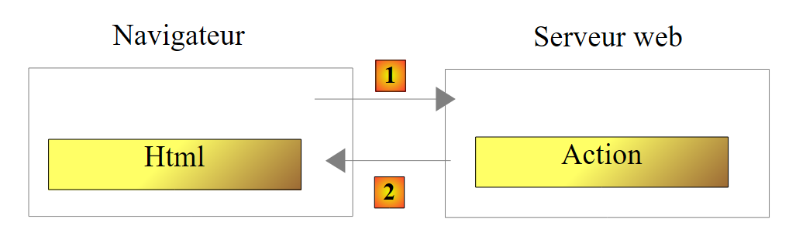 |
La classe de l'action est instanciée au début de la requête du client et détruite à la la fin de celle-ci. Aussi ne peut-elle servir à mémoriser des données entre deux requêtes même si elle est appelée de façon répétée. On peut vouloir mémoriser deux types de données :
- des données partagées par tous les utilisateurs de l'application web. Ce sont en général des données en lecture seule. Trois fichiers sont utilisés pour mettre en oeuvre ce partage de données :
- [Web.Config] : le fichier de configuration de l'application
- [Global.asax, Global.asax.cs] : permettent de définir une classe, appelée classe globale d'application, dont la durée de vie est celle de l'application, ainsi que des gestionnaires pour certains événements de cette même application.
La classe globale d'application permet de définir des données qui seront disponibles pour toutes les requêtes de tous les utilisateurs.
- des données partagées par les requêtes d'un même client. Ces données sont mémorisées dans un objet appelé Session. On parle alors de session client pour désigner la mémoire du client. Toutes les requêtes d'un client ont accès à cette session. Elles peuvent y stocker et y lire des informations.
 |
Ci-dessus, nous montrons les types de mémoire auxquels a accès une action :
- la mémoire de l'application qui contient la plupart du temps des données en lecture seule et qui est accessible à tous les utilisateurs ;
- la mémoire d'un utilisateur particulier, ou session, qui contient des données en lecture / écriture et qui est accessible aux requêtes successives d'un même utilisateur ;
- non représentée ci-dessus, il existe une mémoire de requête, ou contexte de requête. La requête d'un utilisateur peut être traitée par plusieurs actions successives. Le contexte de la requête permet à une action 1 de transmettre de l'information à une action 2.
Regardons un premier exemple mettant en lumière ces différentes mémoires :
Tout d'abord, nous modifions le fichier [Web.config] du projet [Exemple-02] de la façon suivante :
<appSettings>
<add key="webpages:Version" value="2.0.0.0" />
...
<add key="infoAppli1" value="infoAppli1"/>
</appSettings>
Nous rajoutons la ligne 4 qui à la clé [infoAppli1] associe la valeur [infoAppli1]. Ce sera notre donnée de portée [Application] : elle sera accessible à toutes les requêtes de tous les utilisateurs.
Ensuite nous modifions la méthode [Application_Start] du fichier [Global.asax]. Cette méthode s'exécute une unique fois au démarrage de l'application. C'est là qu'il faut exploiter le fichier [Web.config] :
protected void Application_Start()
{
AreaRegistration.RegisterAllAreas();
WebApiConfig.Register(GlobalConfiguration.Configuration);
FilterConfig.RegisterGlobalFilters(GlobalFilters.Filters);
RouteConfig.RegisterRoutes(RouteTable.Routes);
BundleConfig.RegisterBundles(BundleTable.Bundles);
// intialisation application
Application["infoAppli1"] = ConfigurationManager.AppSettings["infoAppli1"];
}
Nous rajoutons la ligne 10. Elle fait deux choses :
- elle récupère la valeur de la clé [infoAppli1] dans le fichier [Web.config] au moyen de la classe [System.Configuration.ConfigurationManager] ;
- elle l'enregistre dans le dictionnaire [HttpApplication.Application], associée à la clé [infoAppli1]. Toutes les actions ont accès à ce dictionnaire.
Dans le même fichier [Gloabal.asax], on ajoute la méthode [Session_Start] suivante :
protected void Session_Start()
{
// initialisation compteur
Session["compteur"] = 0;
}
La méthode [Session_Start] est exécutée pour tout nouvel utilisateur. Qu'est-ce qu'un nouvel utilisateur ? Un utilisateur est " suivi " par un jeton de session. Ce jeton est :
- créé par le serveur web et envoyé au nouvel utilisateur dans les entêtes HTTP de la première réponse qui lui est faite ;
- renvoyé par le navigateur de l'utilisateur à chaque nouvelle requête qu'il fait. Cela permet au serveur de reconnaître l'utilisateur et de gérer une mémoire pour lui qu'on appelle la session de l'utilisateur.
Le serveur web reconnaît qu'il a affaire à un nouvel utilisateur lorsque celui-ci ne lui envoie pas de jeton de session. Le serveur lui en crée alors un.
Ligne 4 ci-dessus, on met dans la session de l'utilisateur un compteur qui sera incrémenté à chaque requête de cet utilisateur. Cela illustrera la mémoire associée à un utilisateur. La classe [Session] s'utilise comme un dictionnaire (ligne 4).
Ceci fait, nous écrivons l'action [Action16] suivante :
// Action16
public ContentResult Action16()
{
// on récupère le contexte de la requête HTTP
HttpContextBase contexte = ControllerContext.HttpContext;
// on récupère les infos de portée Application
string infoAppli1 = contexte.Application["infoAppli1"] as string;
// et celles de portée Session
int? compteur = contexte.Session["compteur"] as int?;
compteur++;
contexte.Session["compteur"] = compteur;
// la réponse au client
string texte = string.Format("infoAppli1={0}, compteur={1}", infoAppli1, compteur);
return Content(texte, "text/plain", Encoding.UTF8);
}
- ligne 5 : on récupère le contexte de la requête HTTP en cours de traitement. Ce contexte va nous donner accès aux données de portée [Application] et [Session] ;
- ligne 7 : on récupère l'information de portée [Application] ;
- ligne 9 : on récupère le compteur dans la session ;
- lignes 10-11 : il est incrémenté puis remis dans la session ;
- lignes 13-14 : les deux informations sont envoyées au client.
Voici des exemples d'exécution :
[Action16] est demandée une première fois [1] puis la page est rafraîchie [F5] deux fois [2] :
 |
En [2], le client a fait au total trois requêtes. A chaque fois, il a pu récupérer le compteur mis à jour par la précédente requête.
Pour simuler un second utilisateur, nous utilisons un deuxième navigateur pour demander la même URL :
 |
En [3], le second utilisateur récupère bien la même information de portée [Application] mais a son propre compteur de portée [Session].
Revenons au code de l'action [Action16] :
// Action16
public ContentResult Action16()
{
// on récupère le contexte de la requête HTTP
HttpContextBase contexte = ControllerContext.HttpContext;
// on récupère les infos de portée Application
string infoAppli1 = contexte.Application["infoAppli1"] as string;
// et celles de portée Session
int? compteur = contexte.Session["compteur"] as int?;
compteur++;
contexte.Session["compteur"] = compteur;
// la réponse au client
string texte = string.Format("infoAppli1={0}, compteur={1}", infoAppli1, compteur);
return Content(texte, "text/plain", Encoding.UTF8);
}
L'un des buts du framework ASP.NET MVC est de rendre les contrôleurs et les actions testables de façon isolée sans serveur web. Or on voit ligne 5, que le contexte de la requête HTTP est nécessaire pour récupérer les informations de portée [Application] et de portée [Session]. On se propose de créer une nouvelle action [Action17] qui recevrait les données de portée [Application] et [Session] en paramètres :
// Action17
public ContentResult Action17(ApplicationModel applicationData, SessionModel sessionData)
{
// on récupère les infos de portée Application
string infoAppli1 = applicationData.InfoAppli1;
// et celles de portée Session
int compteur = sessionData.Compteur++;
// la réponse au client
string texte = string.Format("infoAppli1={0}, compteur={1}", infoAppli1, compteur);
return Content(texte, "text/plain", Encoding.UTF8);
}
Le code ne comporte désormais plus de dépendances envers la requête HTTP. Elle peut donc être testée isolément d'un serveur web.
Voyons comment y arriver. Tout d'abord, il nous faut créer les classes [ApplicationModel] et [SessionModel] qui vont encapsuler respectivement les données de portée [Application] et [Session]. Ce sont les suivantes :
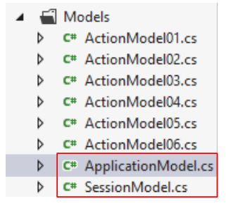 |
namespace Exemple_02.Models
{
public class ApplicationModel
{
public string InfoAppli1 { get; set; }
}
}
namespace Exemple_02.Models
{
public class SessionModel
{
public int Compteur { get; set; }
public SessionModel()
{
Compteur = 0;
}
}
}
Ensuite, il nous faut modifier les méthodes [Application_Start] et [Session_Start] du fichier [Global.asax] :
public class MvcApplication : System.Web.HttpApplication
{
protected void Application_Start()
{
AreaRegistration.RegisterAllAreas();
WebApiConfig.Register(GlobalConfiguration.Configuration);
FilterConfig.RegisterGlobalFilters(GlobalFilters.Filters);
RouteConfig.RegisterRoutes(RouteTable.Routes);
BundleConfig.RegisterBundles(BundleTable.Bundles);
// intialisation application - cas 1
Application["infoAppli1"] = ConfigurationManager.AppSettings["infoAppli1"];
// intialisation application - cas 2
ApplicationModel data=new ApplicationModel();
data.InfoAppli1=ConfigurationManager.AppSettings["infoAppli1"];
Application["data"] = data;
}
protected void Session_Start()
{
// initialisation compteur - cas 1
Session["compteur"] = 0;
// initialisation compteur - cas 2
Session["data"] = new SessionModel();
}
}
- ligne 14 : une instance de [ApplicationModel] est créée ;
- ligne 15 : elle est initialisée ;
- ligne 16 : et placée dans le dictionnaire de [Application], asssociée à la clé [data]. [Application] est une propriété de la classe [HttpApplication] de la ligne 1 ;
- ligne 24 : une instance de [SessionModel] est créée et placée dans le dictionnaire de [Session], asssociée à la clé [data]. [Session] est une propriété de la classe [HttpApplication] de la ligne 1 ;
Si on s'en tient à ce que nous avons vu jusqu'à maintenant, la signature
public ContentResult Action17(ApplicationModel applicationData, SessionModel sessionData)
signifie que la requête HTTP traitée par l'action devra comporter des paramètres nommés [applicationData] et [sessionData]. Ce ne sera pas le cas. Nous devons créer un nouveau modèle de liaison de données pour que lorsqu'une action reçoit en paramètre un type :
- [ApplicationModel], la donnée de portée [Application] et de clé [data] lui soit fournie ;
- [SessionModel], la donnée de portée [Session] et de clé [data] lui soit fournie.
Il faut pour cela créer des classes implémentant l'interface [IModelBinder].
Nous commençons par créer un dossier [Infrastructure] dans le projet [Exemple-02] :
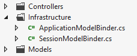 |
Nous y créons la classe [ApplicationModelBinder] suivante :
using System.Web.Mvc;
namespace Exemple_02.Infrastructure
{
public class ApplicationModelBinder : IModelBinder
{
public object BindModel(ControllerContext controllerContext, ModelBindingContext bindingContext)
{
// on rend les données de portée [Application]
return controllerContext.RequestContext.HttpContext.Application["data"];
}
}
}
- ligne 5 : la classe implémente l'interface [IModelBinder]. Pour comprendre son code, il faut savoir qu'elle sera appelée à chaque fois qu'une action aura un paramètre de type [ApplicationModel]. Cette liaison [ApplicationModel] --> [ApplicationModelBinder] sera faite au démarrage de l'application, dans la méthode [Application_Start] de [Global.asax] ;
- ligne 7 : l'unique méthode de l'interface [IModelBinder] ;
- ligne 7 : le paramètre de type [ControllerContext] nous donne accès à la requête HTTP en cours de traitement ;
- ligne 7 : le paramètre de type [ModelBindingContext] nous donne accès à des informations sur le modèle à construire, ici le type [ApplicationModel] ;
- ligne 7 : le résultat de [BindModel] est l'objet qui va être affecté au paramètre lié, ici un paramètre de type [ApplicationModel] ;
- ligne 10 : nous nous contentons de rendre l'objet de portée [Application] et de clé [data].
La classe [SessionModelBinder] suit le même schéma :
using System.Web.Mvc;
namespace Exemple_02.Infrastructure
{
public class SessionModelBinder : IModelBinder
{
public object BindModel(ControllerContext controllerContext, ModelBindingContext bindingContext)
{
// on rend les données de portée [Session]
return controllerContext.HttpContext.Session["data"];
}
}
}
Il ne nous reste plus qu'à associer chacun des modèles [XModel] à son binder [XModelBinder]. Ceci est fait dans la méthode [Application_Start] de [Global.asax] :
protected void Application_Start()
{
....
// intialisation application - cas 2
ApplicationModel data=new ApplicationModel();
data.InfoAppli1=ConfigurationManager.AppSettings["infoAppli1"];
Application["data"] = data;
// model binders
ModelBinders.Binders.Add(typeof(ApplicationModel), new ApplicationModelBinder());
ModelBinders.Binders.Add(typeof(SessionModel), new SessionModelBinder());
}
- ligne 9 : lorsqu'une action aura un paramètre de type [ApplicationModel], la méthode [ApplicationModelBinder.Bind] sera appelée. On sait qu'elle rend la donnée de portée [Application] associée à la clé [data] ;
- ligne 10 : idem pour le type [SessionModel].
Revenons à notre action [Action17] :
// Action17
public ContentResult Action17(ApplicationModel applicationData, SessionModel sessionData)
{
// on récupère les infos de portée Application
string infoAppli1 = applicationData.InfoAppli1;
// et celles de portée Session
sessionData.Compteur++;
int compteur = sessionData.Compteur;
// la réponse au client
string texte = string.Format("infoAppli1={0}, compteur={1}", infoAppli1, compteur);
return Content(texte, "text/plain", Encoding.UTF8);
}
- ligne 2 : lorsque [Action17] sera appelée, elle recevra pour
- premier paramètre : la donnée de portée [Application] associée à la clé [data],
- second paramètre : la donnée de portée [Session] associée à la clé [data] ;
Ces deux données peuvent être aussi complexes que l'on veut et regrouper pour l'une toutes les données de portée [Application] et pour l'autre toutes les données de portée [Session].
Voici un exemple d'exécution de l'action [Action17] :
 |
4.11. Liaison tardive du modèle de l'action
Nous avons écrit l'action [Action12] suivante :
// Action12
public ContentResult Action12(ActionModel05 modèle)
{
string erreurs = getErrorMessagesFor(ModelState);
string texte = string.Format("taux={0}, erreurs={1}", modèle.Taux, erreurs);
return Content(texte, "text/plain", Encoding.UTF8);
}
De façon cachée, ASP.NET MVC :
- crée une instance de type [ActionModel05] en utilisant son constructeur sans paramètres ;
- l'initialise avec les informations de la requête qui ont le même nom (indifférent à la casse) que l'une des propriétés de [ActionModel05].
Parfois ce comportement ne nous convient pas. C'est notamment le cas lorsqu'on veut utiliser un constructeur particulier du modèle de l'action. On peut alors procéder de la façon suivante :
// Action18
public ContentResult Action18()
{
ActionModel05 modèle = new ActionModel05();
TryUpdateModel(modèle);
string erreurs = getErrorMessagesFor(ModelState);
string texte = string.Format("taux={0}, erreurs={1}", modèle.Taux, erreurs);
return Content(texte, "text/plain", Encoding.UTF8);
}
- ligne 2 : l'action ne reçoit plus de paramètres. Il n'y a donc plus de liaison automatique de données ;
- ligne 4 : nous créons nous-mêmes une instance du modèle de l'action. C'est là qu'on pourrait utiliser un constructeur différent ;
- ligne 5 : on initialise le modèle avec les informations de la requête. C'est ASP.NET MVC qui fait ce travail. Il le fait de la même façon qu'il l'aurait fait si le modèle avait été en paramètre ;
- ligne 6 : on est désormais dans la même situation que dans l'action [Action12].
Voici un exemple d'exécution :
 |
4.12. Conclusion
Revenons à l'architecture d'une application ASP.NET MVC :
 |
Une requête [1] transporte avec elle diverses informations que ASP.NET MVC présente [2a] à l'action sous forme d'un modèle que nous avons appelé modèle d'action.
 |
- la requête HTTP du client arrive en [1] ;
- en [2], les informations contenues dans la requête sont transformées en modèle d'action [3] ;
- en [4], l'action, à partir de ce modèle, va générer une réponse. Celle-ci aura deux composantes : une vue V [6] et le modèle M de cette vue [5] ;
- la vue V [6] va utiliser son modèle M [5] pour générer la réponse HTTP destinée au client.
Dans le modèle MVC, l'action [4] fait partie du C (contrôleur), le modèle de la vue [5] est le M et la vue [6] est le V.
Ce chapitre a étudié les mécanismes de liaison entre les informations transportées par la requête, qui sont par nature des chaînes de caractères et le modèle de l'action qui peut être une classe avec des propriétés de divers types. Nous avons vu également qu'il était possible de vérifier la validité du modèle présenté à l'action. Enfin, nous avons vu comment élargir ce modèle aux données de portée [Session] et [Application].
Nous allons nous intéresser maintenant à la fin de la chaîne de traitement de la requête [1] : la création de la vue [6] et de son modèle [5]. Ces deux éléments sont produits par l'action [4].